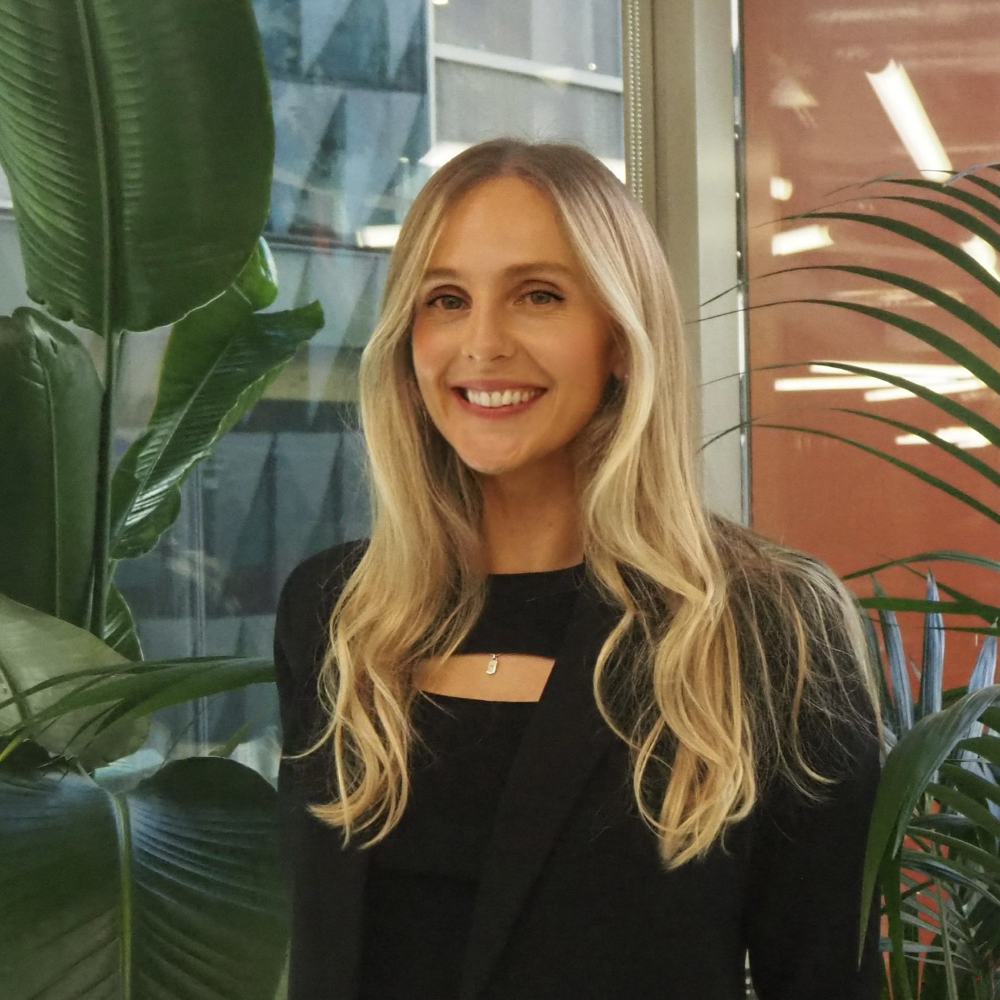

Lucy Ham | Theoretical Systems Biology | Postdoctoral Researcher

I am a senior postdoctoral researcher at the ARC Centre of Excellence for the Mathematical Analysis of Cellular Systems (MACSYS) at the University of Melbourne and a member of the Theoretical Systems Biology group. My research bridges mathematics, computational biology, and theoretical biophysics, with a particular focus on developing mathematical models to understand complex biological systems.
My work primarily explores the control mechanisms governing stochastic gene expression and signaling processes that influence cell fate decisions. By combining mathematical theory with computational approaches, I aim to uncover the fundamental principles underlying molecular networks and their role in cellular function and development.
With a PhD in pure mathematics—spanning logic, algebra, and theoretical computer science—I bring a rigorous approach to the study of stochastic biological processes. My contributions to the theory of stochastic processes include insights into gene expression dynamics and first-passage time problems, providing new analytical solutions with broad applications in biology.